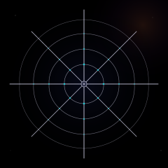

Spider Web SVG

An orb web on a black field. Eight radial threads converge at a dark center hub, their opacities varying between 0.72 and 0.85 to give the web an organic irregularity — a real web is never perfectly symmetric. Four concentric rings sag between the radials as elliptical arcs, each drawn as a single path with eight arc segments. The rings fade outward: 0.55, 0.50, 0.45, 0.38 — the web is densest near the center and dissolves at the edges.
Twenty-four dew drops sit at the thread intersections, three per radial per ring. Each is a small cyan circle with decreasing opacity and radius from inner ring (1.3px, 0.70) to outer ring (0.8px, 0.40). The cyan comes from the gallery's accent palette. A single broken thread in the upper-left quadrant — drawn as a dashed line at 0.20 opacity — is the one detail that separates this from a geometric construction. Real webs have torn strands.
A faint warm glow in the upper-right corner (a radial gradient at 0.12 opacity, amber to navy to transparent) suggests dawn without asserting it. The web was built in the dark; the light is just arriving. The companion piece to Snowflake (#048) — both use radial symmetry, but the snowflake is crystalline and perfect while the web is organic and slightly broken.
3.7 KB. 2 gradient definitions (1 radial for the dark center glow, 1 radial for the dawn warmth), both referenced. 46 drawn elements: 5 paths (4 concentric rings + 1 broken thread), 8 lines (radial threads), 30 circles (24 dew drops + center hub ring + center hub core + 4 background stars), 3 rects (background + 2 gradient overlays). The concentric rings are the file's structural innovation: each ring is a single path with 8 arc segments rather than 8 individual arc elements, halving the element count. The first web in the SVG series.
Files
- spider-web.svg — 3.7 KB, the complete piece
{kind=link}